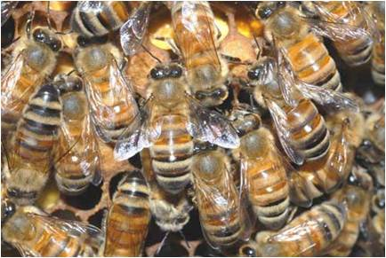
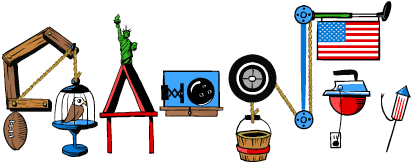

Trust and Protection in the Illinois Browser Operating System
Shuo Tang, Haohui Mai, and Sam King
- Email, banking, social networking, and more
|  | Web app vulnerabilities |
| Browser vulnerabilities | |
| OS & lib vulnerabilities |
| Web app vulnerabilities | |
| Browser vulnerabilities | |
| OS & lib vulnerabilities |
- Monolithic
- All in one address space
- Easy to exploit
Web App
Web App
Web App
Firefox
Windows
Red indicates trusted computing base
- Isolate web apps
- Contain attacks
- Still have huge trusted computing base (TCB)
Web App
Web App
Web App
OP/Chrome Browser Kernel
TPC/IP
X Server
File Sys.
Drivers
Linux
- Better isolation
- But...
- Still needs to trust all the components
Browser Kernel
TCP/IP
X Server
File Sys.
Drivers
Web App
Web App
Web App
Microkernel
- Goal: design new OS to make a single app more secure
- Reduced TCB for web browser
Browser kernel
TCP/IP
X Server
File Sys.
Drivers
Web App
Web App
Web App
Browser Abstrations
IBOS Kernel
- IBOS architecture
- Security invariants
- Applying security invariants to IBOS
- Evaluation
- Conclusion
Traditional App
Unix Layer
Web Page Instance
Web Page Instance
Web Page Instance
Browser Abstrations
UI
Storage
Net Process
Net Process
Net Process
Device Drivers
IBOS Kernel
Hardware
Make browser abstractions first-class OS abstractions
Maintain browser security policy even if components completely compromised
Real-world invariant: see fireworks on the fourth of July
Check key properties without understanding the implementation
Challenge: check security properties using security invariants
- Browser related label
- Origin < protocol, domain, port >
- Inferred and labeled by kernel
http://www.cs.uiuc.edu:80
protocol
domain
port
http://www.google.com
Web Page Instance
google
http://www.cs.uiuc.edu
Web Page Instance
uiuc
Web Page Instance
google
Web Page Instance
uiuc
GET: google.com
Net Process
google
google
GET: ads.com/somead.jpg
Net Process
google
ads.com
GET: ads.com/anotherad.jpg
Net Process
uiuc
ads.com
GET: cs.uiuc.edu
Net Process
uiuc
uiuc
Net Process
uiuc
ads.com
NIC Driver
IBOS Kernel
NIC Ver. Logic
DMA Buffer
NIC Ver. Logic

Eth Frames
Check TCP Port
Check IP Address
DMA Addr
Set Tx Buf
Validate Tx Buf
Web Page Instance
uiuc
Pointer to frame buffer
Frame buffer memory pixel data
Web Page Instance
google
Web Page Instance
uiuc
Page protections
- Basic key-value pair object store
- IBOS kernel encrypts data before storing it
- Don't have to trust storage drivers and stack
- HTTPS gives us similar properties for NIC driver
- L4Ka::Pistachio MMU abstr. and message passing
- e1000 Ethernet driver, mouse, keyboard
- Framebuffer video driver + Qt software raster
- WebKit and Qt
- Current "Unix-like" API is uclibc + Qt
- Current "traditional apps" are Qt applications
- Current plugin is PDF viewer
- Intel Core Quad CPU @ 2.33 GHz, 4GB RAM
- Goal: design new OS to make web browser more secure
- Execute arbitrary inst. in untrusted components
- Confidentiality and integrity
| Software stack | LOC |
|---|---|
|
Firefox on Linux
Firefox
GTK+ & glibc X.Org Linux kernel |
> 5,600,000
~ 2,100,000
~ 1,200,000 ~ 700,000 ~ 1,600,000 |
|
ChromeOS
Chrome browser kernel
GTK+ & glibc ChromeOS kernel & services |
> 4,400,000
~ 800,000
~ 1,200,000 ~ 2,400,000 |
|
IBOS
IBOS kernel
L4Ka::Pistachio |
~ 42,000
~ 9,000
~ 33,000 |
| Affected component | Num. | Prevented |
|---|---|---|
|
Linux overall
File system
Network stack Other |
21
12
5 4 |
20 (95%)
12 (100%)
5 (100%) 3 (75%) |
| X Server | 2 | 2 (100%) |
| GTK+ & glibc | 5 | 5 (100%) |
| Overall | 28 | 27 (96%) |
Published in CVE in 2010 as of Sep. 18
| Category | Num. | Chrome Contained |
IBOS Contained or prevented |
|---|---|---|---|
| Memory exploitation | 82 | 71 (86%) | 79 (96%) |
| Sandbox bypassing | 12 | 0 (0%) | 12 (100%) |
| Other | 81 | 12 (15%) | 44 (54%) |
| Overall | 175 | 83 (46%) | 135 (77%) |
Bugs labeled as "security" in Google Chrome's bug track
IBOS
IBOS-Linux
Firefox
Chrome
3000
2500
2000
1500
1000
500
0
Google Maps
Bing
Craigslist
CS@Illinois
Wiki
Facebook
Page load latency in milliseconds
- Browser abstractions as the first-class OS abstractions
- Trust: reduced TCB for web browser
- Protection: withstand attacks to most components
-
Questions?